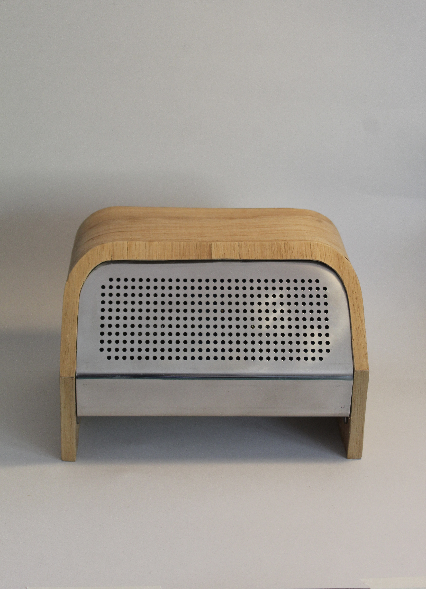
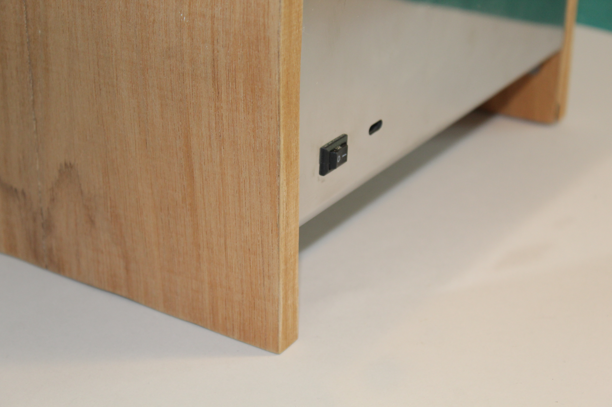

← Volver a proyectos

Parlante plegado
Fabricación digital · 2025Este proyecto es el resultado del ramo de Fabricación Digital Avanzada, en el que desarrollé un parlante utilizando Fusion 360. Exploré el proceso de modelado 3D y el desarrollo de planimetrías para la fabricación digital de piezas en acero plegado.

